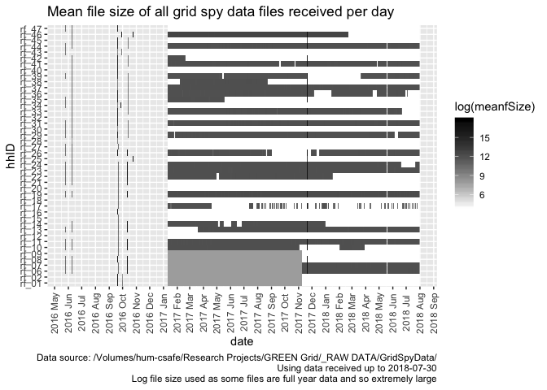
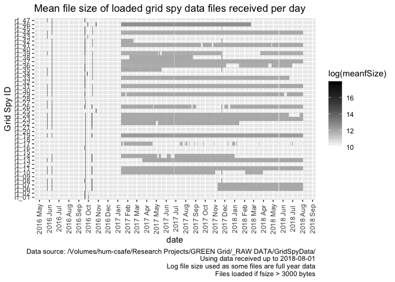
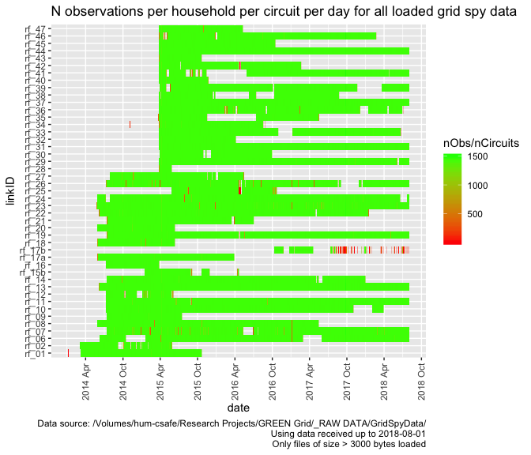
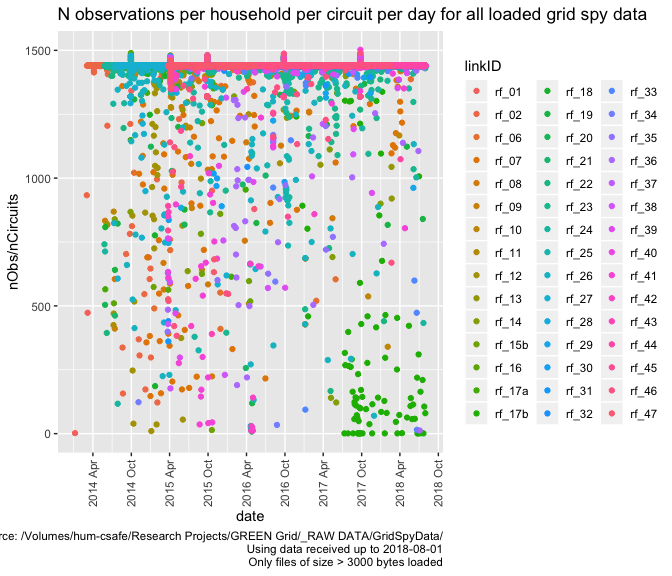
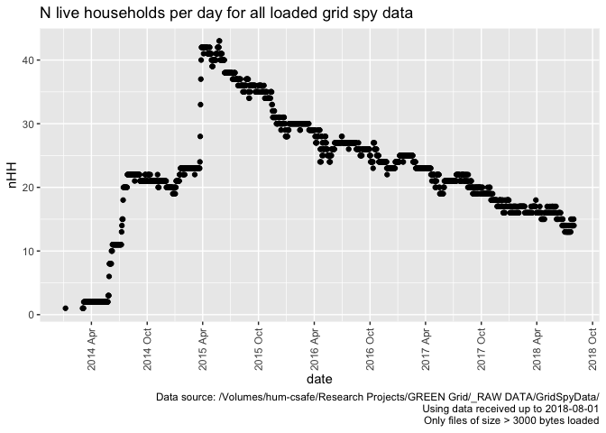
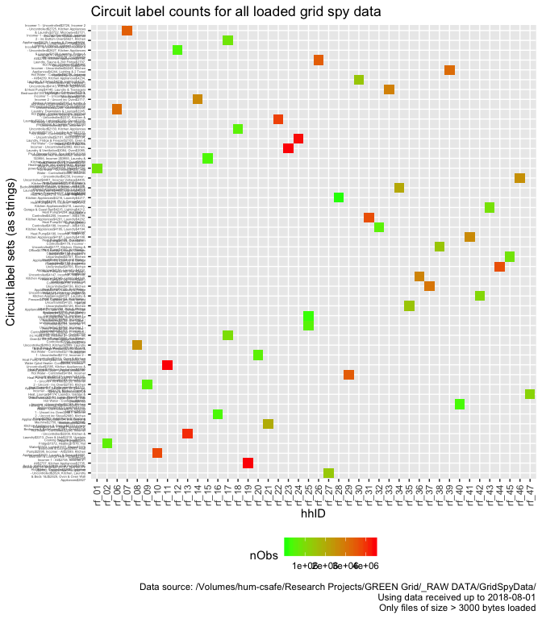

@dataknut)This work is made available under the Creative Commons Attribution-ShareAlike 4.0 International (CC BY-SA 4.0) License.
This means you are free to:
Under the following terms:
Notices:
For the avoidance of doubt and explanation of terms please refer to the full license notice and legal code.
If you wish to use any of the material from this report please cite as:
This work is (c) 2018 the University of Southampton.
This report uses data quality statistics produced when processing the original grid spy 1 minute data downloads using https://github.com/dataknut/nzGREENGridDataR/blob/master/dataProcessing/gridSpy/processGridSpy1mData.R.
This work was supported by:
The NZ GREEN Grid project recruited a sample of c 25 households in each of two regions of New Zealand. The first sample was recruited in early 2014 and the second in early 2015. Research data includes:
This report provides summary data quality statistics for the original GREEN grid Grid Spy household power demand monitoring data. This data was used to create a derived ‘safe’ dataset using the code in the nzGREENGridDataR repository.
The original data files files are stored on the University of Otago’s High-Capacity Central File Storage HCS. The data used to generate this report was loaded from:
Data collection is ongoing and this section reports on the availability of data files collected up to the time at which the most recent safe file was created (2018-08-02 18:03:19).
To date we have 25,148 files from 44 unique grid spy IDs.
However a large number of files (14,929 or 59%) have 1 of two file sizes (43 or 2751 bytes) and we have determined that they contain no data as the monitoring devices have either been removed (households have moved or withdrawn from the study) or data transfer has failed. We therefore flag these files as ‘to be ignored’.
In addition two of the grid spy units were re-used in new households following withdrawl of the original participants. The grid spy IDs (rf_XX) remained unchanged despite allocation to different households. The original input data does not therefore distinguish between these households and we discuss how this is resolved in the clean safe data in Section @ref(reallocation) below.
The following chart shows the distribution of the file sizes of all files over time by grid spy ID. Note that white indicates the presence of small files which may not contain observations.

## Saving 7 x 5 in imageAs we can see, relatively large files were donwloaded (manually) in June and October 2016 before an automated download process was implemented from January 2017. A final manual download appears to have taken place in early December 2017.
The following chart shows the same analysis but excludes files which do not meet the file size threshold and which we therefore assume do not contain data.

## Saving 7 x 5 in imageAs we can see this removes a large number of the autmatically downloaded files.
As noted above, the original data was downloaded in two ways:
Resolving and cleaning these variations and uncertainties have required substantial effort and in some cases the date has had to be inferred from the file names.
The following table lists up to 10 of the ‘date NZ’ files which are set by default - do they look OK to assume the default dateFormat? Compare the file names with the dateExample…
# list default files with NZ time
aList <- fListCompleteDT[dateColName == "date NZ" & dateFormat %like% "default",
.(file, fSize, dateColName, dateExample, dateFormat)]
cap <- paste0("First 10 (max) of ", nrow(aList),
" files with dateColName = 'date NZ' and default dateFormat")
knitr::kable(caption = cap, head(aList))| file | fSize | dateColName | dateExample | dateFormat |
|---|---|---|---|---|
| rf_01/1Jan2014-24May2014at1.csv | 6255737 | date NZ | 2014-01-06 | ymd - default (but day/month value <= 12) |
| rf_02/1Jan2014-24May2014at1.csv | 6131625 | date NZ | 2014-03-03 | ymd - default (but day/month value <= 12) |
| rf_06/24May2014-24May2015at1.csv | 19398444 | date NZ | 2014-06-09 | ymd - default (but day/month value <= 12) |
| rf_10/24May2014-24May2015at1.csv | 24386048 | date NZ | 2014-07-09 | ymd - default (but day/month value <= 12) |
| rf_11/24May2014-24May2015at1.csv | 23693893 | date NZ | 2014-07-08 | ymd - default (but day/month value <= 12) |
| rf_12/24May2014-24May2015at1.csv | 21191785 | date NZ | 2014-07-09 | ymd - default (but day/month value <= 12) |
The following table lists up to 10 of the ‘date UTC’ files which are set by default - do they look OK to assume the default dateFormat? Compare the file names with the dateExample…
# list default files with UTC time
aList <- fListCompleteDT[dateColName == "date UTC" & dateFormat %like% "default",
.(file, fSize, dateColName, dateExample, dateFormat)]
cap <- paste0("First 10 (max) of ", nrow(aList),
" files with dateColName = 'date UTC' and default dateFormat")
knitr::kable(caption = cap, head(aList, 10))| file | fSize | dateColName | dateExample | dateFormat |
|---|---|---|---|---|
| rf_06/10Apr2018-11Apr2018at1.csv | 156944 | date UTC | 2018-04-09 | ymd - default (but day/month value <= 12) |
| rf_06/10Dec2017-11Dec2017at1.csv | 156601 | date UTC | 2017-12-09 | ymd - default (but day/month value <= 12) |
| rf_06/10Feb2018-11Feb2018at1.csv | 153353 | date UTC | 2018-02-09 | ymd - default (but day/month value <= 12) |
| rf_06/10Jan2018-11Jan2018at1.csv | 153982 | date UTC | 2018-01-09 | ymd - default (but day/month value <= 12) |
| rf_06/10Jul2018-11Jul2018at1.csv | 158338 | date UTC | 2018-07-09 | ymd - default (but day/month value <= 12) |
| rf_06/10Jun2018-11Jun2018at1.csv | 156641 | date UTC | 2018-06-09 | ymd - default (but day/month value <= 12) |
| rf_06/10Mar2018-11Mar2018at1.csv | 156471 | date UTC | 2018-03-09 | ymd - default (but day/month value <= 12) |
| rf_06/10May2018-11May2018at1.csv | 156683 | date UTC | 2018-05-09 | ymd - default (but day/month value <= 12) |
| rf_06/10Nov2017-11Nov2017at1.csv | 155639 | date UTC | 2017-11-09 | ymd - default (but day/month value <= 12) |
| rf_06/11Apr2018-12Apr2018at1.csv | 157181 | date UTC | 2018-04-10 | ymd - default (but day/month value <= 12) |
After final cleaning, the final date formats are:
| dateColName | dateFormat | nFiles | meanFSizeKb | minFSizeKb | maxFSizeKb | minFDate | maxFDate |
|---|---|---|---|---|---|---|---|
| Unknown - ignore as fsize ( 2751 ) < dataThreshold ( 3000 ) | NA | 1812 | 2.686523 | 2.686523 | 2.686523 | 2017-01-11 | 2017-11-08 |
| Unknown - ignore as fsize ( 43 ) < dataThreshold ( 3000 ) | NA | 13117 | 0.04199219 | 0.04199219 | 0.04199219 | 2017-01-11 | 2018-08-01 |
| date NZ | dmy - definite | 1 | 4,097.157 | 4,097.157 | 4,097.157 | 2016-09-29 | 2016-09-29 |
| date NZ | mdy - definite | 2 | 13,833.84 | 9,067.765 | 18,599.92 | 2016-10-25 | 2016-10-25 |
| date NZ | ymd - default (but day/month value <= 12) | 12 | 16,862.1 | 2,652.745 | 27,267.51 | 2016-09-20 | 2016-10-13 |
| date NZ | ymd - definite | 67 | 11,248.34 | 228.9131 | 31,502.92 | 2016-09-19 | 2016-10-13 |
| date UTC | dmy - inferred | 28 | 27,304.84 | 569.8506 | 53,282.66 | 2016-05-25 | 2017-11-21 |
| date UTC | ymd - default (but day/month value <= 12) | 3957 | 315.9203 | 20.63379 | 40,318.22 | 2016-09-19 | 2018-07-14 |
| date UTC | ymd - definite | 6152 | 292.2984 | 21.20605 | 50,810.54 | 2016-06-08 | 2018-08-01 |
Results to note:
In this section we analyse the data files that have a file size > 3000 bytes and which have been used to create the safe data. Things to note:
The following table shows the number of files per grid spy ID that are actually processed to make the safe version together with the min/max file save dates (not the observed data dates).
# check files to load
t <- fListCompleteDT[dateColName %like% "date", .(nFiles = .N,
meanSize = mean(fSize),
minFileDate = min(fMDate),
maxFileDate = max(fMDate)), keyby = .(gridSpyID = hhID)]
knitr::kable(caption = "Summary of household files to load", t)| gridSpyID | nFiles | meanSize | minFileDate | maxFileDate |
|---|---|---|---|---|
| rf_01 | 3 | 15548174.7 | 2016-09-20 | 2016-09-30 |
| rf_02 | 3 | 10134268.3 | 2016-09-20 | 2016-09-30 |
| rf_06 | 269 | 594678.4 | 2016-05-25 | 2018-08-01 |
| rf_07 | 269 | 634734.7 | 2016-05-25 | 2018-08-01 |
| rf_08 | 5 | 23989121.0 | 2016-05-25 | 2017-11-21 |
| rf_09 | 2 | 14344605.0 | 2016-09-21 | 2016-09-21 |
| rf_10 | 358 | 525455.0 | 2016-05-25 | 2018-03-30 |
| rf_11 | 571 | 385151.5 | 2016-05-25 | 2018-08-01 |
| rf_12 | 2 | 10713096.0 | 2016-09-21 | 2016-09-21 |
| rf_13 | 503 | 436966.1 | 2016-05-25 | 2018-08-01 |
| rf_14 | 329 | 424262.0 | 2016-06-08 | 2017-12-31 |
| rf_15 | 2 | 10553143.0 | 2016-09-21 | 2016-09-21 |
| rf_16 | 1 | 20037376.0 | 2016-09-20 | 2016-09-20 |
| rf_17 | 237 | 359559.1 | 2016-09-21 | 2018-08-01 |
| rf_18 | 2 | 14374309.5 | 2016-09-21 | 2016-09-21 |
| rf_19 | 571 | 510715.1 | 2016-05-25 | 2018-08-01 |
| rf_20 | 2 | 14665810.0 | 2016-09-21 | 2016-09-21 |
| rf_21 | 4 | 23058797.8 | 2016-05-25 | 2016-10-12 |
| rf_22 | 371 | 533704.5 | 2016-05-25 | 2018-01-16 |
| rf_23 | 571 | 398072.9 | 2016-05-25 | 2018-08-01 |
| rf_24 | 539 | 401860.5 | 2016-05-25 | 2018-08-01 |
| rf_25 | 3 | 12341581.3 | 2016-06-08 | 2017-11-21 |
| rf_26 | 477 | 363087.9 | 2016-05-25 | 2018-08-01 |
| rf_27 | 3 | 22607698.7 | 2016-05-25 | 2016-09-21 |
| rf_28 | 2 | 2297483.0 | 2016-06-08 | 2016-09-19 |
| rf_29 | 561 | 315512.4 | 2016-05-25 | 2018-08-01 |
| rf_30 | 5 | 13695336.0 | 2016-05-25 | 2016-10-13 |
| rf_31 | 571 | 313201.3 | 2016-05-25 | 2018-08-01 |
| rf_32 | 2 | 13934454.0 | 2016-06-08 | 2016-09-20 |
| rf_33 | 530 | 275592.6 | 2016-06-08 | 2018-06-22 |
| rf_34 | 7 | 14106275.3 | 2016-05-25 | 2016-10-13 |
| rf_35 | 134 | 573648.6 | 2016-05-25 | 2017-11-21 |
| rf_36 | 490 | 282969.5 | 2016-06-08 | 2018-07-05 |
| rf_37 | 570 | 279298.0 | 2016-06-08 | 2018-08-01 |
| rf_38 | 201 | 385707.5 | 2016-06-08 | 2017-11-21 |
| rf_39 | 447 | 336601.0 | 2016-05-25 | 2018-08-01 |
| rf_40 | 2 | 9299902.0 | 2016-06-08 | 2016-09-20 |
| rf_41 | 562 | 248760.0 | 2016-06-08 | 2018-08-01 |
| rf_42 | 45 | 1315953.6 | 2016-06-08 | 2017-11-21 |
| rf_43 | 4 | 9442492.0 | 2016-05-25 | 2016-09-28 |
| rf_44 | 571 | 313990.0 | 2016-05-25 | 2018-08-01 |
| rf_45 | 4 | 10513812.0 | 2016-06-08 | 2017-11-21 |
| rf_46 | 411 | 605048.1 | 2016-06-08 | 2018-02-21 |
| rf_47 | 3 | 17544847.0 | 2016-05-25 | 2016-09-20 |
As noted in the introduction, two units were re-allocated to new households during the study. These were:
To avoid confusion the data for each of these units has been split in to rf_XXa/rf_XXb files on the appropriate dates during data processing. The clean data therefore contains data files for:
Each cleaned safe data file contains both the original hhID (i.e. the gird spy ID) and a new linkID which has the same value as hhID except in the case of these four files. The linkID variable should always be used to link the grid spy data to the survey or other household level data in the data package.
In all subsequent analysis we use linkID to give results for each household.
The following plots show the number of observations per day per household. In theory we should not see:
If present both of the latter may have been implied by the table above and would have evaded the de-duplication filter which simply checks each complete row against all others within it’s consolidated household dataset (a within household absolute duplicate check).
Note that rf_15a is not present as no usable data was obtained from this household.

The following table shows the min/max number of observations per day and min/max dates for each household. As above, we should not see:
If we do see any of these then we still have data cleaning work to do!
| linkID | minObs | maxObs | meanN_Circuits | minDate | maxDate |
|---|---|---|---|---|---|
| rf_01 | 12 | 8871 | 6.00000 | 2014-01-06 | 2015-10-20 |
| rf_02 | 732 | 8640 | 6.00000 | 2014-03-03 | 2015-05-28 |
| rf_06 | 2460 | 8825 | 6.00000 | 2014-06-09 | 2018-08-01 |
| rf_07 | 882 | 8893 | 6.00000 | 2014-07-14 | 2018-08-01 |
| rf_08 | 1344 | 8847 | 6.00000 | 2014-05-29 | 2017-05-15 |
| rf_09 | 2466 | 8915 | 6.00000 | 2014-07-14 | 2015-07-16 |
| rf_10 | 2040 | 8840 | 6.00000 | 2014-07-09 | 2018-03-29 |
| rf_11 | 2549 | 8826 | 6.00000 | 2014-07-08 | 2018-08-01 |
| rf_12 | 60 | 8838 | 6.00000 | 2014-07-09 | 2015-06-03 |
| rf_13 | 4925 | 8934 | 6.00000 | 2014-06-06 | 2018-08-01 |
| rf_14 | 732 | 8868 | 6.00000 | 2014-07-14 | 2017-12-30 |
| rf_15b | 84 | 8640 | 6.00000 | 2015-01-15 | 2016-04-19 |
| rf_16 | 3060 | 8937 | 6.00000 | 2014-07-10 | 2015-03-26 |
| rf_17a | 3390 | 8854 | 6.00000 | 2014-05-30 | 2016-03-28 |
| rf_17b | 6 | 8640 | 6.00000 | 2016-10-12 | 2018-07-31 |
| rf_18 | 1116 | 8849 | 6.00000 | 2014-05-30 | 2015-06-11 |
| rf_19 | 72 | 13161 | 9.00000 | 2014-07-15 | 2018-08-01 |
| rf_20 | 3024 | 8878 | 6.00000 | 2014-05-29 | 2015-06-11 |
| rf_21 | 1542 | 8854 | 6.00000 | 2014-07-15 | 2016-07-01 |
| rf_22 | 1002 | 8873 | 6.00000 | 2014-06-06 | 2018-01-15 |
| rf_23 | 2370 | 8816 | 6.00000 | 2014-05-26 | 2018-08-01 |
| rf_24 | 702 | 8760 | 6.00000 | 2014-05-29 | 2018-08-01 |
| rf_25 | 72 | 8818 | 6.00000 | 2015-05-25 | 2016-10-22 |
| rf_26 | 420 | 8857 | 6.00000 | 2014-07-11 | 2018-08-01 |
| rf_27 | 2610 | 8873 | 6.00000 | 2014-07-28 | 2016-05-14 |
| rf_28 | 4476 | 8640 | 6.00000 | 2015-03-27 | 2015-05-26 |
| rf_29 | 5088 | 8797 | 6.00000 | 2015-03-26 | 2018-08-01 |
| rf_30 | 5016 | 8865 | 6.00000 | 2015-03-28 | 2016-09-29 |
| rf_31 | 2166 | 8848 | 6.00000 | 2015-03-26 | 2018-08-01 |
| rf_32 | 2640 | 8775 | 6.00000 | 2015-03-26 | 2016-04-05 |
| rf_33 | 90 | 8888 | 6.00000 | 2015-03-24 | 2018-06-21 |
| rf_34 | 204 | 8825 | 6.00000 | 2014-11-04 | 2016-08-24 |
| rf_35 | 2394 | 8839 | 6.00000 | 2015-03-23 | 2017-05-17 |
| rf_36 | 72 | 8787 | 6.00000 | 2015-03-24 | 2018-07-04 |
| rf_37 | 4584 | 8824 | 6.00000 | 2015-03-24 | 2018-08-01 |
| rf_38 | 1062 | 8861 | 6.00000 | 2015-03-25 | 2017-08-22 |
| rf_39 | 1490 | 7381 | 5.00000 | 2015-03-28 | 2018-08-01 |
| rf_40 | 3798 | 8849 | 6.00000 | 2015-03-25 | 2015-11-22 |
| rf_41 | 216 | 9014 | 6.00000 | 2015-03-26 | 2018-08-01 |
| rf_42 | 72 | 8819 | 6.00000 | 2015-03-24 | 2017-02-18 |
| rf_43 | 2340 | 8741 | 6.00000 | 2015-03-27 | 2015-10-19 |
| rf_44 | 5346 | 8768 | 6.00000 | 2015-03-25 | 2018-08-01 |
| rf_45 | 4770 | 8758 | 6.00000 | 2015-03-25 | 2016-10-15 |
| rf_46 | 2526 | 19357 | 12.84489 | 2015-03-27 | 2018-02-20 |
| rf_47 | 3156 | 8818 | 6.00000 | 2015-03-25 | 2016-05-08 |
Finally we plot the total number of households for whom we have data on a given date. This gives an indication of the attrition rate. This chart is re-plotted in the overall data package summary coded by sample.

The following table shows the number of files for each household with different circuit labels. In theory each grid spy id should only have one set of unique circuit labels. If not:
Some or all of these may be true at any given time.
| linkID | circuitLabels | nFiles | nObs | meanDailyPowerkW | minDailyPowerkW | maxDailyPowerkW |
|---|---|---|---|---|---|---|
| rf_01 | Kitchen power$1632, Heating$1633, Mains$1634, Lights$1635, Hot water$1636, Range$1637 | 594 | 5111157 | 0.53 | -0.07 | 13.56 |
| rf_02 | Fridge$1572, Cooking Bath tile heat$1573, Hot Water$1574, Mains$1575, Heating$1576, Lights$1577 | 415 | 3487293 | 0.22 | -0.33 | 10.20 |
| rf_06 | Lighting$2244, Laundry, Downstairs & Lounge$2245, Kitchen$2246, Oven & Hob$2247, Hot Water - Controlled$2248, Incomer - Uncontrolled$2249 | 1328 | 11411167 | 0.24 | -1.44 | 8.95 |
| rf_07 | Microwave$2721, Kitchen Appliances & Laundry$2722, Workshop$2723, Oven$2724, Incomer 2 - Uncontrolled$2725, Incomer 1 - Uncontrolled$2726 | 1425 | 12061885 | 0.16 | -0.83 | 7.12 |
| rf_08 | Kitchen$2089, Laundry & 2nd Fridge Freezer$2090, Oven & Hob$2091, Heat Pump$2092, Incomer - Uncontrolled$2093, Hot Water - Controlled$2094 | 1083 | 9289503 | 0.24 | 0.00 | 11.66 |
| rf_09 | Kitchen Appliances$2727, Lounge, Dining & Bedrooms$2728, Incomer 1 - Uncont - Inc Hob$2729, Incomer 2 - Uncont - Inc Oven$2730, Heat Pump & Bedroom 2$2731, Laundry$2732 | 368 | 3167835 | 0.18 | -0.04 | 5.95 |
| rf_10 | Laundry & Garage$2597, Heat Pump$2598, Incomer - All$2599, Oven$2600, Kitchen Appliances$2601, Bedrooms & Lounge$2602 | 1268 | 10932797 | 0.19 | -0.37 | 9.86 |
| rf_11 | Incomer - Uncontrolled$2585, Hot Water Cpbd Heater- Cont$2586, Spa - Uncontrolled$2587, Kitchen Appliances & Laundry$2588, Hob$2589, Heat Pump & Lounge$2590 | 1481 | 12763308 | 0.15 | 0.00 | 10.94 |
| rf_12 | Incomer 2 - Uncontrolled$2625, Incomer 1 - Hot Water - Cont$2626, Incomer 3 - Uncontrolled$2627, Laundry, Fridge & Microwave$2628, Oven$2629, Kitchen Appliances & Lounge$2630 | 289 | 2389215 | 0.18 | -1.40 | 7.27 |
| rf_13 | Hot Water - Controlled$2208, Incomer - Uncontrolled$2209, Oven & Hob$2210, Upstairs Heat Pumps$2211, Downstairs (inc 1 Heat Pump)$2212, Kitchen & Laundry$2213 | 1516 | 13080941 | 0.39 | -3.97 | 11.58 |
| rf_14 | Kitchen Appliances$2715, Power Outlets$2716, Incomer 2 - Uncont inc Oven$2717, Incomer 1 - Uncont inc Stove$2718, Hot Water - Controlled$2719, Laundry & Microwave$2720 | 1244 | 10700939 | 0.15 | -2.36 | 6.48 |
| rf_15b | Laundry & Kitchen Appliances$3951, Hot Water$3952, Oven$3953, Hob$3954, Incomer 2$3955, Incomer 1$3956 | 276 | 2345250 | 0.33 | -1.16 | 8.12 |
| rf_16 | Hot Water - Controlled$2679, Incomer 2 - Uncont inc Stove$2680, Incomer 1 - Uncont inc Oven$2681, Microwave & Breadmaker$2682, Hallway & Washing Machine$2683, Kitchen Appliances & Bedrooms$2684 | 260 | 2234133 | 0.12 | -0.27 | 6.26 |
| rf_17a | Kitchen Appliances$2147, Heat Pump$2148, Laundry$2149, Hot Water - Controlled$2150, Incomer 2 - Uncont - inc Oven$2151, Incomer 1 - Uncont - inc Hob$2152 | 669 | 5760067 | 0.11 | -1.13 | 8.19 |
| rf_17b | Incomer 1 - inc Top Oven$5620, Incomer 2 - inc Bottom Oven$5621, Lighting 2/2$5622, Lighting 1/2$5623, Laundry & Garage$5624, Kitchen Appliances$5625 | 257 | 1632900 | 0.09 | -0.10 | 4.64 |
| rf_18 | Incomer 1 - Uncontrolled$2128, Hot Water - Controlled$2129, Incomer 2 - Uncontrolled$2130, Kitchen Appliances & Ventilati$2131, Oven$2132, Laundry & Hob$2133 | 378 | 3243033 | 0.33 | -2.58 | 8.82 |
| rf_19 | PV 1$2739, Theatre Heat Pump$2740, Bedroom & Lounge Heat Pumps$2741, PV 2$2733, Laundry$2734, Kitchen Appliances$2735, Oven$2736, Incomer 2 - All$2737, Incomer 1 - All$2738 | 1 | 5766 | -0.02 | -2.39 | 2.06 |
| rf_19 | PV 2$2733, Laundry$2734, Kitchen Appliances$2735, Oven$2736, Incomer 2 - All$2737, Incomer 1 - All$2738, PV 1$2739, Theatre Heat Pump$2740, Bedroom & Lounge Heat Pumps$2741 | 1471 | 18977224 | -0.18 | -4.63 | 5.28 |
| rf_20 | Heat Pump & Misc$2107, Oven & Kitchen Appliances$2108, Hob$2109, Hot Water - Controlled$2110, Incomer 2 - Uncontrolled$2111, Incomer 1 - Uncontrolled$2112 | 379 | 3260738 | 0.21 | -3.15 | 6.21 |
| rf_21 | Incomer - All$2748, Oven$2749, Heat Pump & Washing Machine$2750, Lower Bedrooms & Bathrooms$2751, Fridge$2752, Kitchen Appliances & Garage$2753 | 704 | 6061797 | 0.14 | -0.03 | 7.99 |
| rf_22 | Lighting$2232, Ventilation & Lounge Power$2233, Kitchen & Laundry$2234, Oven$2235, Hot Water - Controlled$2236, Incomer - Uncontrolled$2237 | 1314 | 11312684 | 0.37 | -1.43 | 15.50 |
| rf_23 | Spa (HEMS)$2080, Hot Water - Controlled (HEMS)$2081, Incomer - Uncontrolled$2082, PV & Storage$2083, Kitchen, Laundry & Ventilation$2084, Oven$2085 | 1525 | 13086959 | 0.26 | -2.12 | 11.02 |
| rf_24 | Incomer - Uncontrolled$2101, Hot Water - Controlled$2102, Oven & Hob$2103, Kitchen$2104, Laundry, Fridge & Freezer$2105, PV$2106 | 1469 | 12645693 | -0.09 | -4.95 | 6.93 |
| rf_25 | Heat Pump$2758, Hob & Kitchen Appliances$2759, Oven$2760, Hot Water - Controlled$2761, Incomer 2 - Uncontrolled $2762, Incomer 1 - Uncontrolled $2763 | 507 | 4237240 | 0.27 | -0.04 | 7.14 |
| rf_26 | Incomer 1 - All$2703, Incomer 2 - All$2704, Oven$2705, Kitchen Appliances$2706, Laundry, Sauna & 2nd Fridge$2707, Spa$2708 | 1369 | 11632001 | 0.21 | -1.27 | 30.82 |
| rf_27 | Incomer - Uncontrolled$2824, Hot Water - Controlled$2825, Heat Pump$2826, Oven & Oven Wall Appliances$2827, Bed 2, 2nd Fridge$2828, Kitchen, Laundry & Beds 1&3$2829 | 637 | 5452235 | 0.29 | -0.36 | 27.76 |
| rf_28 | Kitchen Appliances$4216, Laundry$4217, Lighting$4218, Heat Pump$4219, PV & Garage$4220, Incomer - All$4221 | 61 | 518062 | -0.07 | -3.57 | 7.96 |
| rf_29 | Incomer - Uncontrolled$4181, Oven$4182, Lighting$4183, Hot Water - Controlled$4184, Laundry$4185, Heat Pump & Kitchen Appliances$4186 | 1217 | 10498747 | 0.39 | -0.02 | 8.89 |
| rf_30 | Kitchen Appliances$4234, Laundry & Kitchen$4235, Lighting$4236, Oven & Hobb$4237, Hot Water - Controlled$4238, Incomer - All$4239 | 519 | 4462859 | 0.23 | -0.02 | 8.71 |
| rf_31 | Incomer - All$4199, Hot Water - Controlled$4200, Kitchen Appliances$4201, Laundry$4202, Lighting$4203, Heat Pump$4204 | 1224 | 10561695 | 0.18 | 0.00 | 10.55 |
| rf_32 | Incomer - All$4193, Laundry$4194, Kitchen Appliances$4195, Heat Pump$4196, Lighting$4197, Hot Water - Controlled$4198 | 377 | 3246891 | 0.20 | 0.00 | 8.27 |
| rf_33 | Laundry & Teenagers Bedroom$4139, Kitchen Appliances & Heat Pump$4140, Oven, Hob & Microwave$4141, Lighting$4142, Incomer - Uncontrolled$4143, Hot Water - Controlled$4144 | 1117 | 9608753 | 0.20 | 0.00 | 9.53 |
| rf_34 | Lighting$4222, Heat Pump$4223, Hot Water - Uncontrolled$4224, Incomer - All$4225, Kitchen Appliances$4226, Laundry & Garage Freezer$4227 | 511 | 4383672 | 0.35 | -0.40 | 13.04 |
| rf_35 | Kitchen Appliances$4121, Laundry, Garage Fridge Freezer$4122, Lighting$4123, Heat Pump$4124, Hot Water - Uncontrolled$4125, Incomer - Uncontrolled$4126 | 547 | 4692059 | 0.28 | -0.99 | 7.62 |
| rf_36 | Kitchen Appliances$4145, Washing Machine$4146, Hot Water - Uncontrolled$4147, Incomer - All$4148, Lighting$4149, Heat Pump$4150 | 1128 | 9634326 | 0.22 | -0.03 | 14.83 |
| rf_37 | Lighting$4133, Heat Pump$4134, Hot Water - Controlled$4135, Incomer -Uncontrolled$4136, Kitchen Appliances$4137, Laundry & Fridge Freezer$4138 | 1226 | 10580628 | 0.14 | -0.06 | 6.68 |
| rf_38 | Heat Pump$4175, Lighting$4176, Incomer - Uncontrolled$4177, Hot Water - Controlled$4178, Kitchen, Dining & Office$4179, Laundry, Lounge, Garage, Bed$4180 | 621 | 5319113 | 0.26 | -0.18 | 6.68 |
| rf_39 | Kitchen Appliances$4244, Lighting & 2 Towel Rail$4245, Oven$4246, Hot Water (2 elements)$4247, Incomer - Uncontrolled$4248 | 1072 | 7686876 | 0.49 | -1.11 | 12.48 |
| rf_40 | Kitchen Appliances$4163, Laundry$4164, Lighting$4165, Heat Pump (x2) & Lounge Power$4166, Hot Water - Controlled$4167, Incomer - Uncontrolled$4168 | 243 | 2089674 | 0.30 | -0.59 | 10.70 |
| rf_41 | Kitchen Appliances$4187, Laundry$4188, Lighting$4189, Heat Pump$4190, Oven$4191, Incomer - All$4192 | 968 | 8238759 | 0.28 | 0.00 | 11.87 |
| rf_42 | Kitchen Appliances$4127, Laundry & Freezer$4128, Lighting (inc heat lamps)$4129, Heat Pump$4130, Hot Water - Uncontrolled$4131, Incomer - All$4132 | 686 | 5851654 | 0.39 | -0.06 | 12.38 |
| rf_43 | Kitchen Appliances$4210, Heat Pump$4211, Lighting$4212, Incomer - All$4213, Oven$4214, Laundry, Garage & Guest Bed$4215 | 207 | 1777241 | 0.18 | -0.13 | 6.69 |
| rf_44 | Kitchen Appliances$4151, Laundry $4152, Lighting$4153, Heat Pump$4154, Hot Water - Controlled$4155, Incomer - Uncontrolled$4156 | 1225 | 10572377 | 0.24 | -0.02 | 9.00 |
| rf_45 | Incomer - Uncontrolled$4157, Hot Water - Controlled$4158, Lighting$4159, Heat Pump$4160, Kitchen Appliances$4161, Laundry & Garage Fridge$4162 | 571 | 4917962 | 0.18 | 0.00 | 7.61 |
| rf_46 | Laundry & Bedrooms$4228, Kitchen & Bedrooms$4229, Incomer - Uncontrolled$4230, Hot Water - Controlled$4231, Heat Pumps (2x) & Power$4232, Lighting$4233 | 23 | 180149 | 0.26 | 0.00 | 6.69 |
| rf_46 | Laundry & Bedrooms$4228, Kitchen & Bedrooms$4229, Incomer - Uncontrolled$4230, Hot Water - Controlled$4231, Heat Pumps (2x) & Power$4232, Lighting$4233, Heat Pumps (2x) & Power$4399, Hot Water - Controlled$4400, Incomer - Uncontrolled$4401, Kitchen & Bedrooms$4402, Laundry & Bedrooms$4403, Lighting$4404, Incomer Voltage$4405 | 1015 | 18922974 | 0.23 | -0.48 | 10.96 |
| rf_47 | Wall Oven$4169, Incomer - All$4170, Heat Pump & 2 x Bathroom Heat$4171, Lighting$4172, Laundry, Garage & 2 Bedrooms$4173, Kitchen Power & Heat, Lounge$4174 | 411 | 3530065 | 0.12 | -0.02 | 11.17 |
Things to note:
Errors are easier to spot in the following plot where a household spans 2 or more circuit label sets.

If the above plot and table flag errors then further re-naming of the circuit labels may be necessary.
Analysis completed in 58 seconds ( 0.97 minutes) using knitr in RStudio with R version 3.5.0 (2018-04-23) running on x86_64-apple-darwin15.6.0.
R packages used:
Session info:
## R version 3.5.0 (2018-04-23)
## Platform: x86_64-apple-darwin15.6.0 (64-bit)
## Running under: macOS High Sierra 10.13.6
##
## Matrix products: default
## BLAS: /System/Library/Frameworks/Accelerate.framework/Versions/A/Frameworks/vecLib.framework/Versions/A/libBLAS.dylib
## LAPACK: /Library/Frameworks/R.framework/Versions/3.5/Resources/lib/libRlapack.dylib
##
## locale:
## [1] en_GB.UTF-8/en_GB.UTF-8/en_GB.UTF-8/C/en_GB.UTF-8/en_GB.UTF-8
##
## attached base packages:
## [1] stats graphics grDevices utils datasets methods base
##
## other attached packages:
## [1] Hmisc_4.1-1 Formula_1.2-3 survival_2.42-6
## [4] lattice_0.20-35 lubridate_1.7.4 kableExtra_0.9.0
## [7] stringr_1.3.1 knitr_1.20 readr_1.1.1
## [10] ggplot2_3.0.0 data.table_1.11.4 rmarkdown_1.10
## [13] nzGREENGridDataR_0.1.0
##
## loaded via a namespace (and not attached):
## [1] httr_1.3.1 maps_3.3.0 viridisLite_0.3.0
## [4] splines_3.5.0 assertthat_0.2.0 sp_1.3-1
## [7] highr_0.7 latticeExtra_0.6-28 cellranger_1.1.0
## [10] yaml_2.2.0 progress_1.2.0 pillar_1.3.0
## [13] backports_1.1.2 glue_1.3.0 digest_0.6.15
## [16] RColorBrewer_1.1-2 checkmate_1.8.5 rvest_0.3.2
## [19] colorspace_1.3-2 htmltools_0.3.6 Matrix_1.2-14
## [22] plyr_1.8.4 pkgconfig_2.0.1 bookdown_0.7
## [25] purrr_0.2.5 scales_0.5.0 jpeg_0.1-8
## [28] openssl_1.0.2 ggmap_2.6.1 htmlTable_1.12
## [31] tibble_1.4.2 withr_2.1.2 nnet_7.3-12
## [34] lazyeval_0.2.1 cli_1.0.0 proto_1.0.0
## [37] magrittr_1.5 crayon_1.3.4 readxl_1.1.0
## [40] evaluate_0.11 fansi_0.2.3 xml2_1.2.0
## [43] foreign_0.8-71 tools_3.5.0 prettyunits_1.0.2
## [46] hms_0.4.2 geosphere_1.5-7 RgoogleMaps_1.4.2
## [49] munsell_0.5.0 cluster_2.0.7-1 bindrcpp_0.2.2
## [52] compiler_3.5.0 rlang_0.2.1 grid_3.5.0
## [55] rstudioapi_0.7 rjson_0.2.20 htmlwidgets_1.2
## [58] labeling_0.3 base64enc_0.1-3 gtable_0.2.0
## [61] reshape2_1.4.3 R6_2.2.2 gridExtra_2.3
## [64] dplyr_0.7.6 utf8_1.1.4 bindr_0.1.1
## [67] rprojroot_1.3-2 nzGREENGrid_0.1.0 stringi_1.2.4
## [70] Rcpp_0.12.18 mapproj_1.2.6 rpart_4.1-13
## [73] acepack_1.4.1 png_0.1-7 tidyselect_0.2.4
## [76] xfun_0.3Csárdi, Gábor, and Rich FitzJohn. 2016. Progress: Terminal Progress Bars. https://CRAN.R-project.org/package=progress.
Dowle, M, A Srinivasan, T Short, S Lianoglou with contributions from R Saporta, and E Antonyan. 2015. Data.table: Extension of Data.frame. https://CRAN.R-project.org/package=data.table.
Grolemund, Garrett, and Hadley Wickham. 2011. “Dates and Times Made Easy with lubridate.” Journal of Statistical Software 40 (3): 1–25. http://www.jstatsoft.org/v40/i03/.
R Core Team. 2016. R: A Language and Environment for Statistical Computing. Vienna, Austria: R Foundation for Statistical Computing. https://www.R-project.org/.
Wickham, Hadley. 2009. Ggplot2: Elegant Graphics for Data Analysis. Springer-Verlag New York. http://ggplot2.org.
Wickham, Hadley, and Romain Francois. 2016. Dplyr: A Grammar of Data Manipulation. https://CRAN.R-project.org/package=dplyr.
Wickham, Hadley, Jim Hester, and Romain Francois. 2016. Readr: Read Tabular Data. https://CRAN.R-project.org/package=readr.
Xie, Yihui. 2016. Knitr: A General-Purpose Package for Dynamic Report Generation in R. https://CRAN.R-project.org/package=knitr.
Zhu, Hao. 2018. KableExtra: Construct Complex Table with ’Kable’ and Pipe Syntax. https://CRAN.R-project.org/package=kableExtra.